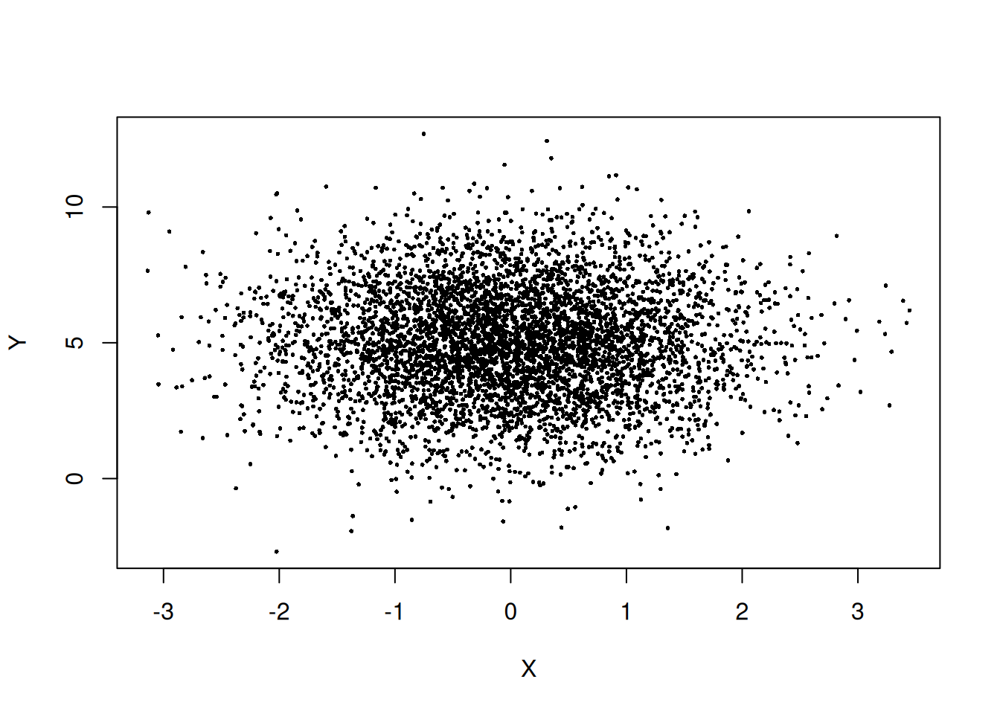
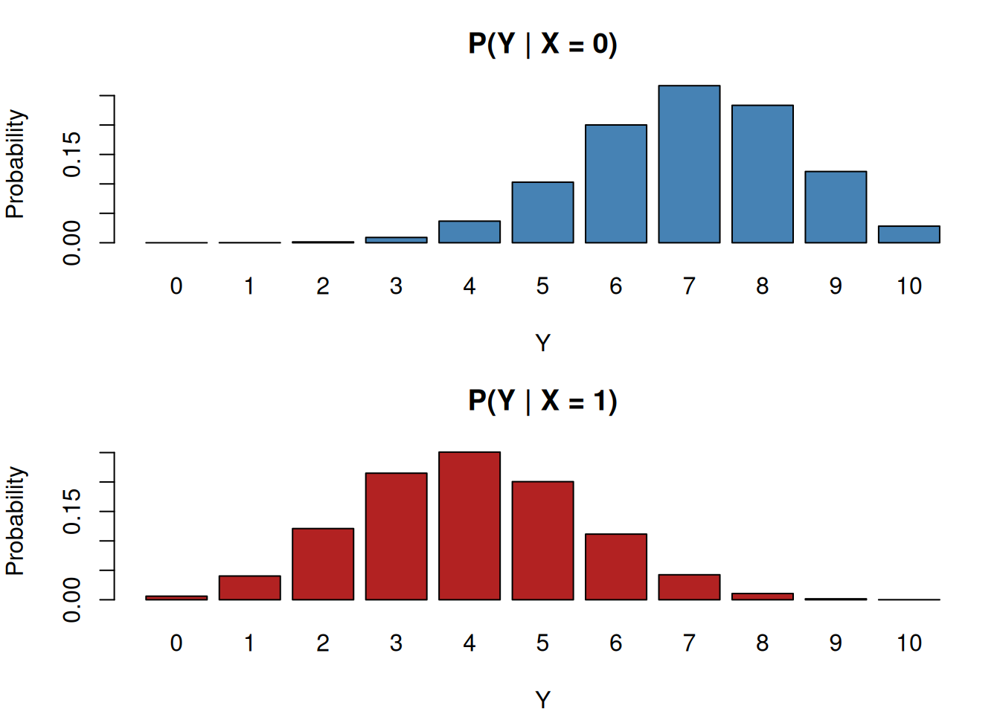
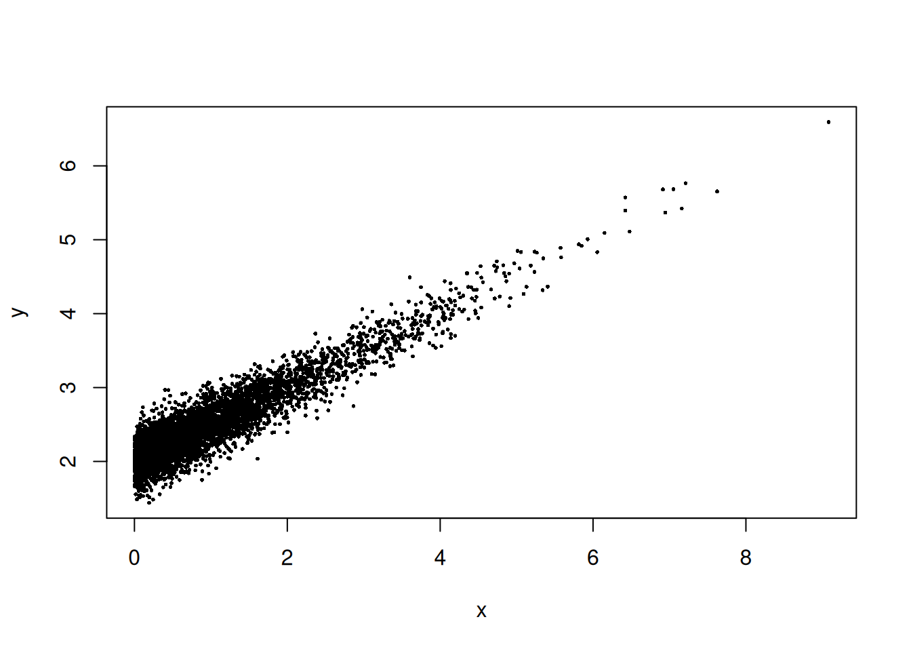
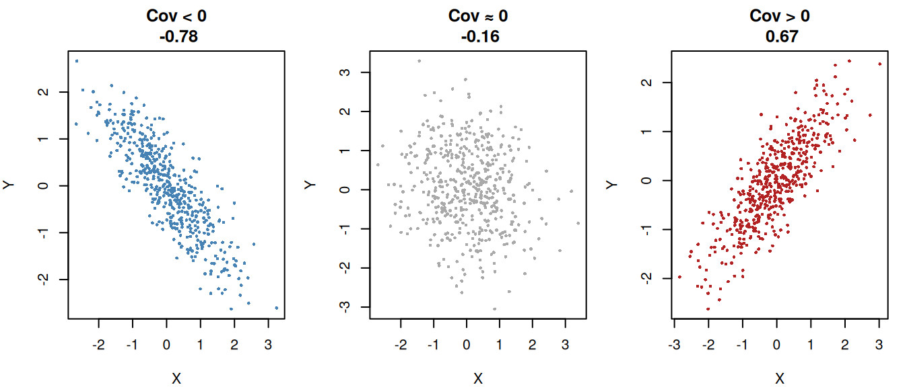
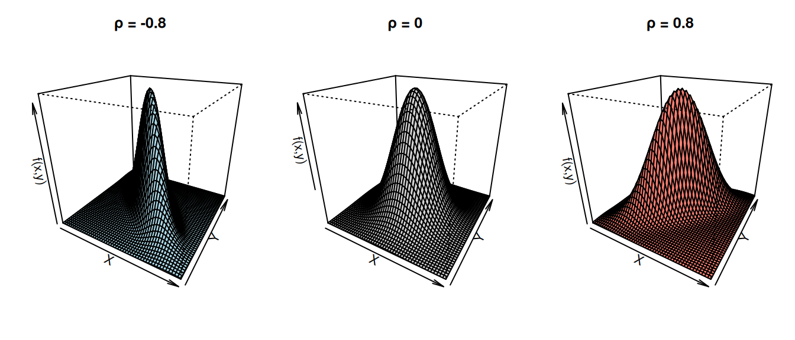
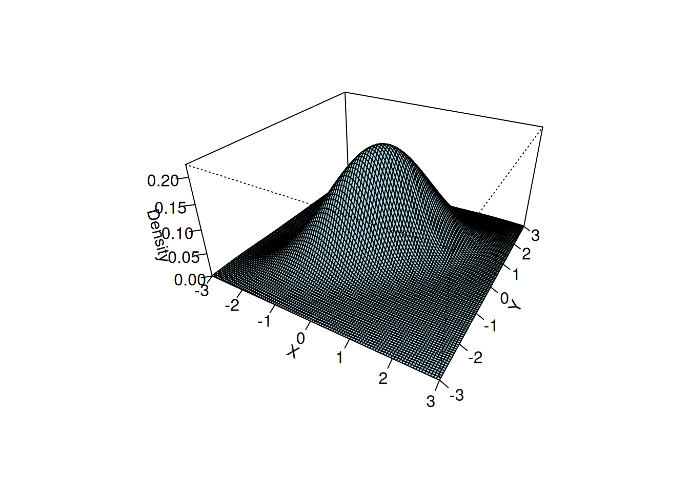

{kind=link}
set.seed(123)
n <- 5000
X <- rbinom(n, 1, 0.5)
Y <- rbinom(n, 1, 0.3)
cor(X, Y) # close to 0[1] -0.01700378In practical simulation studies, we rarely encounter isolated random variables. Instead, systems consist of multiple random components interacting with one another. A queueing system, for example, involves both interarrival times and service times. A financial model may involve asset returns, interest rates, and volatility. Understanding how random variables behave jointly is therefore fundamental.
Before introducing formal definitions, consider the following motivating example.
Example: Suppose we are modelling a simple coffee shop with one barista. For each customer, we record two quantities:
If we simulate only arrivals, we cannot compute waiting times. If we simulate only service times, we cannot determine queue length. To simulate the system correctly, we must generate pairs \((X, Y)\).
This immediately raises several questions:
For instance, suppose during busy periods customers tend to order simpler drinks, resulting in shorter service times. Then small interarrival times might be associated with smaller service times. This is a form of dependence.
To model such behaviour rigorously, we require the concept of a joint distribution.
Incorrectly assuming independence can lead to:
For example:
Simulation provides flexibility to incorporate complex dependence structures — but only if we understand the joint distribution.
Let \(X\) and \(Y\) be two random variables defined on the same probability space. Their behaviour is described by the joint distribution, which specifies probabilities for events involving both variables simultaneously.
From Figure 7.1, the surface is the joint density \(f_{X,Y}(x,y)\). The curves along the axes are the marginals \(f_X(x)\) and \(f_Y(y)\). The scatter cloud shows sample points from the joint distribution.
A marginal distribution tells you how one variable behaves on its own, regardless of the other.
Also, a joint distribution is a multivariate distribution. It is the probability structure that describes how several random variables behave together.
For two variables \(X\) and \(Y\), the joint distribution \(f_{X,Y}(x,y)\) is a bivariate distribution.
For \(k\) variables, \(X_1, \dots, X_k\), the joint distribution is \(f_{X_1,\dots ,X_k}(x_1,\dots ,x_k)\), which is a multivariate distribution.
For this chapter, we will focus on bivariate distribution.
If \(X\) and \(Y\) are discrete, their joint distribution is given by the joint probability mass function
\[p_{X,Y}(x,y) = P(X=x, Y=y),\]
which satisfies:
\[p_{X,Y}(x,y) \ge 0, \qquad \sum_x \sum_y p_{X,Y}(x,y) = 1.\]
From the joint distribution, we can recover the individual (marginal) distributions:
\[ p_X(x) = \sum_y p_{X,Y}(x,y), \qquad p_Y(y) = \sum_x p_{X,Y}(x,y). \]
Example: Suppose \(X\) and \(Y\) are discrete random variables with joint probability mass function
\[ p_{X,Y}(x,y) = P(X=x, Y=y). \]
Their joint pmf is given by the following table:
\[ \begin{array}{c|ccc} & Y=0 & Y=1 & Y=2 \\ \hline X=0 & 0.12 & 0.06 & 0.07 \\ X=1 & 0.10 & 0.15 & 0.05 \\ X=3 & 0.08 & 0.14 & 0.23 \end{array} \]
a. Verify this is a valid joint PMF
\[ \begin{aligned} \sum_x \sum_y p_{X,Y}(x,y) &= (0.12+0.06+0.07) \\ &\quad + (0.10+0.15+0.05) \\ &\quad + (0.08+0.14+0.23) \\ &= 0.25 + 0.30 + 0.45 \\ &= 1.00. \end{aligned} \]
So this is a valid joint pmf.
b. Finding the Marginal Distribution of \(X\)
To obtain the marginal pmf of \(X\), sum across the rows:
\[ p_X(x) = \sum_y p_{X,Y}(x,y). \]
For \(x=0\): \[ p_X(0) = 0.12 + 0.06 + 0.07 = 0.25 \]
For \(x=1\): \[ p_X(1) = 0.10 + 0.15 + 0.05 = 0.30 \]
For \(x=3\): \[ p_X(3) = 0.08 + 0.14 + 0.23 = 0.45 \]
Therefore,
\[ p_X(x) = \begin{cases} 0.25, & x=0 \\ 0.30, & x=1 \\ 0.45, & x=3 \\ 0, & \text{otherwise}. \end{cases} \]
c. Finding the Marginal Distribution of \(Y\)
To obtain the marginal pmf of \(Y\), sum down the columns:
\[ p_Y(y) = \sum_x p_{X,Y}(x,y). \]
For \(y=0\): \[ p_Y(0) = 0.12 + 0.10 + 0.08 = 0.30 \]
For \(y=1\): \[ p_Y(1) = 0.06 + 0.15 + 0.14 = 0.35 \]
For \(y=2\): \[ p_Y(2) = 0.07 + 0.05 + 0.23 = 0.35 \]
Therefore,
\[ p_Y(y) = \begin{cases} 0.30, & y=0 \\ 0.35, & y=1 \\ 0.35, & y=2 \\ 0, & \text{otherwise}. \end{cases} \]
Completed Table with Marginals
\[ \begin{array}{c|ccc|c} & Y=0 & Y=1 & Y=2 & p_X(x) \\ \hline X=0 & 0.12 & 0.06 & 0.07 & 0.25 \\ X=1 & 0.10 & 0.15 & 0.05 & 0.30 \\ X=3 & 0.08 & 0.14 & 0.23 & 0.45 \\ \hline p_Y(y) & 0.30 & 0.35 & 0.35 & 1 \end{array} \]
If \(X\) and \(Y\) are continuous, their joint distribution is described by a joint density function
\[f_{X,Y}(x,y)\]
with
\[ f(x,y) \ge 0, \qquad \int_{-\infty}^{\infty} \int_{-\infty}^{\infty} f_{X,Y}(x,y)\,dx\,dy = 1. \]
The marginal densities are obtained by integration:
\[ f_X(x) = \int f_{X,Y}(x,y)\,dy, \qquad f_Y(y) = \int f_{X,Y}(x,y)\,dx. \]
The joint cumulative distribution function is
\[ F_{X,Y}(x,y) = P(X \le x, Y \le y). \]
Example: Suppose \(X\) and \(Y\) have joint density
\[ f_{X,Y}(x,y) = \begin{cases} 2, & 0 < y < x < 1, \\ 0, & \text{otherwise}. \end{cases} \]
This means the density is constant over the triangular region
\[ 0 < y < x < 1. \]
a. Verify this is a valid joint density
We must check:
The support is the triangular region \(0<y<x<1\), so
\[ \int_0^1 \int_0^x 2 \, dy \, dx. \]
Compute the inner integral:
\[ \int_0^x 2\,dy = 2x. \]
Now integrate with respect to \(x\):
\[ \int_0^1 2x\,dx = \left[x^2\right]_0^1 = 1. \]
So this is a valid joint density.
b. Marginal Density of \(X\)
Marginals are obtained by integrating over slices of triangular region.
We integrate out \(y\):
\[ f_X(x) = \int f(x,y)\,dy. \]
Since \(0<y<x<1\),
\[ f_X(x) = \int_0^x 2\,dy = 2x, \qquad 0<x<1. \]
Thus,
\[ f_X(x) = \begin{cases} 2x, & 0<x<1, \\ 0, & \text{otherwise}. \end{cases} \]
c. Marginal Density of \(Y\)
Now integrate out \(x\).
From the triangular region, for fixed \(y\) we have \(y<x<1\).
So,
\[ f_Y(y) = \int_y^1 2\,dx. \]
Compute:
\[ f_Y(y) = 2(1-y), \qquad 0<y<1. \]
Thus,
\[ f_Y(y) = \begin{cases} 2(1-y), & 0<y<1, \\ 0, & \text{otherwise}. \end{cases} \]
In practice, random variables need not both be discrete or both continuous. A common situation in simulation is that one variable is discrete while another is continuous.
Suppose:
\[X \in \{1,2,\dots,k\}, \qquad Y \text{ continuous}.\]
Then the joint distribution is described by:
\[P(X=x) \quad \text{and} \quad f_{Y|X}(y \mid x).\]
The joint structure is
\[ f_{X,Y}(x,y) = P(X=x)\,f_{Y|X}(y \mid x). \]
This representation is especially important in simulation because it suggests a natural algorithm:
This is the basic structure of mixture models and hierarchical simulation.
Example: Mixed Distribution (Discrete + Continuous)
Suppose
\[ X \in \{1,2\}, \qquad Y \text{ is continuous}. \]
Assume:
\[ P(X=1)=0.4, \qquad P(X=2)=0.6. \]
Conditional on \(X=x\), suppose \(Y\) has the density
\[ f_{Y \mid X}(y \mid x) = \begin{cases} x e^{-x y}, & y>0, \\ 0, & \text{otherwise}. \end{cases} \]
So:
a. Joint Distribution
For mixed distributions,
\[ f_{X,Y}(x,y) = P(X=x)\, f_{Y \mid X}(y \mid x). \]
Thus:
For \(X=1\):
\[ f_{X,Y}(1,y) = 0.4 \cdot (1)e^{-y} = 0.4 e^{-y}, \qquad y>0. \]
For \(X=2\):
\[ f_{X,Y}(2,y) = 0.6 \cdot (2)e^{-2y} = 1.2 e^{-2y}, \qquad y>0. \]
So the joint structure is
\[ f_{X,Y}(x,y) = \begin{cases} 0.4 e^{-y}, & x=1,\, y>0, \\ 1.2 e^{-2y}, & x=2,\, y>0, \\ 0, & \text{otherwise}. \end{cases} \]
b. Verify Total Probability = 1
We must check:
\[ \sum_x \int_0^\infty f_{X,Y}(x,y)\,dy = 1. \]
Compute:
\[ \int_0^\infty 0.4 e^{-y}\,dy = 0.4, \]
\[ \int_0^\infty 1.2 e^{-2y}\,dy = 1.2 \cdot \frac{1}{2} = 0.6. \]
Therefore,
\[ 0.4 + 0.6 = 1. \]
So this is a valid joint distribution.
c. Marginal Density of \(Y\)
We sum over the discrete values of \(X\):
\[ f_Y(y) = \sum_x f_{X,Y}(x,y). \]
So,
\[ f_Y(y) = 0.4 e^{-y} + 1.2 e^{-2y}, \qquad y>0. \]
This is a mixture of exponential densities.
d. Recovering \(P(X=x)\) from the Joint
For mixed distributions,
\[ P(X=x) = \int_{-\infty}^{\infty} f_{X,Y}(x,y)\,dy. \]
We already computed:
\[ P(X=1)=0.4, \qquad P(X=2)=0.6. \]
Up to this point, we have described the most general form of joint behaviour. The joint distribution \(p_{X,Y}(x,y)\) or \(f_{X,Y}(x,y)\) allows arbitrary dependence between \(X\) and \(Y\). In principle, the variables may influence one another in any possible way.
However, among all possible joint distributions, one case is particularly important: the case in which the variables do not influence each other at all. This leads to the concept of independence.
Example: Return to the coffee shop model. Suppose we now assume
In this scenario, knowing the interarrival time gives us no information about the service time. Observing one variable does not change our beliefs about the other.
This intuitive idea — that learning one value tells us nothing about the other — is formalised mathematically as independence.
Two random variables are independent if knowledge of one provides no information about the other.
Formally, \(X\) and \(Y\) are independent if
Discrete Case
\[p_{X,Y}(x,y) = p_X(x)p_Y(y)\]
Continuous Case
\[f_{X,Y}(x,y) = f_X(x)f_Y(y)\]
for all \(x,y\).
Independence simplifies simulation dramatically. If variables are independent, we may generate them separately. However, many real-world systems exhibit dependence, and modelling this dependence correctly is crucial.
Discrete Case Example
Let \(X\) and \(Y\) be two discrete independent random variables:
Because \(X\) and \(Y\) are independent, we simulate them separately.
set.seed(123)
n <- 5000
X <- rbinom(n, 1, 0.5)
Y <- rbinom(n, 1, 0.3)
cor(X, Y) # close to 0[1] -0.01700378Continuous Case Example
Let X and Y be continuous independent random variables:
Because of independence:
\[f_{X,Y}(x,y)=f_X(x)\, f_Y(y)=\frac{1}{\sqrt{2\pi }}e^{-x^2/2}\times \frac{1}{\sqrt{8\pi }}e^{-(y-5)^2/8}\]
The joint density is a product of two unrelated bell curves.
set.seed(123)
n <- 5000
X <- rnorm(n, 0, 1)
Y <- rnorm(n, 5, 2)
cor(X, Y) # close to 0[1] -0.00598005plot(X, Y, pch=16, cex=0.4)
The scatterplot looks like a round cloud, with no directional trend.
Independence describes the simplest possible joint structure: learning the value of one variable does not change the distribution of the other.
But most real systems are not independent.
In practice, we often observe one variable first and then ask:
How does this information affect the behaviour of the other variable?
This question leads naturally to the concept of a conditional distribution.
Example: Return once more to the coffee shop example. Suppose we observe that the interarrival time \(X\) is very small (customers are arriving rapidly).
Would we still expect the same distribution of service times \(Y\)?
Perhaps not. During busy periods, baristas may rush, producing shorter service times on average. Thus the distribution of \(Y\) may depend on the observed value of \(X\).
In this case:
\[\text{Distribution of } Y \mid X=x\]
is different for different values of \(x\).
Dependence is formalised through conditional distributions.
Conditional probability describes how the probability of one event changes when we are given that another event has occurred.
Let \(A\) and \(B\) be two events in a sample space \(\Omega\), with \(P(B)>0\). The conditional probability of \(A\) given \(B\) is defined as
\[ P(A \mid B) = \frac{P(A \cap B)}{P(B)}. \]
As an axiom of probability, we have
\[ P(A \cap B) = P(A \mid B) P(B). \]
Discrete Case
Let \(A = \{X=x\}\) and \(B = \{Y=y\}\),
\[ \begin{align} P(X=x \mid Y=y) &= \frac{P(X=x,Y=y)}{P(Y=y)} \\ &= \frac{p_{X,Y}(x,y)}{p_Y(y)}, \quad p_Y(y)>0 \end{align} \]
Continuous Case
In continuous distributions, we replace probabilities with densities, so
\[f_{X|Y}(x \mid y) = \frac{f_{X,Y}(x,y)}{f_Y(y)}, \quad f_Y(y)>0\]
A conditional distribution is obtained by taking the joint distribution and dividing by the corresponding marginal distribution.
Recall that independence was defined by
\[ f_{X,Y}(x,y) = f_X(x) f_Y(y). \]
Rewriting this gives
\[ f_{Y|X}(y \mid x) = \frac{f_{X,Y}(x,y)}{f_X(x)}. \]
If independence holds, then
\[ f_{Y|X}(y \mid x) = f_Y(y). \]
Thus:
Independence is exactly the situation in which conditioning has no effect.
This observation is crucial. It shows that conditional distributions are not a new idea unrelated to independence — rather, they generalise it.
This transition is particularly important in simulation because:
If variables are independent, we can simulate them separately.
If they are dependent, we often simulate sequentially:
Discrete Case Example
Suppose a small call center with two types of customers:
Let \(X\) be customer type, where \(X=0\) and \(X=1\) denote customer Type A and Type B, respectively. Let \(Y\) be number of support tickets resolved in the next hour.
We model:
\[ Y\mid X=0\sim \mathrm{Binomial}(n=10,p=0.7) \]
\[ Y\mid X=1\sim \mathrm{Binomial}(n=10,p=0.4) \]
This creates dependence between \(X\) and \(Y\). Even if we know the marginal distribution of \(X\) and the marginal distribution of \(Y\), we cannot simulate the system correctly without the conditional structure.
set.seed(123)
n <- 5000
# Customer type: 0 = A, 1 = B
X <- rbinom(n, size = 1, prob = 0.4) # 40% Type B customers
# Conditional distribution for Y
Y <- ifelse(
X == 0,
rbinom(n, size = 10, prob = 0.7), # Type A
rbinom(n, size = 10, prob = 0.4) # Type B
)
cor(X, Y)[1] -0.7032966# Conditional PMFs
y <- 0:10
pmf_A <- dbinom(y, size = 10, prob = 0.7) # X = 0 (Type A)
pmf_B <- dbinom(y, size = 10, prob = 0.4) # X = 1 (Type B)
# Set up side-by-side plotting area
par(mfrow = c(2, 1), mar = c(4, 4, 3, 1))
# PMF for X = 0
barplot(
pmf_A,
names.arg = y,
col = "steelblue",
main = "P(Y | X = 0)",
xlab = "Y",
ylab = "Probability",
ylim = c(0, max(pmf_A, pmf_B))
)
# PMF for X = 1
barplot(
pmf_B,
names.arg = y,
col = "firebrick",
main = "P(Y | X = 1)",
xlab = "Y",
ylab = "Probability",
ylim = c(0, max(pmf_A, pmf_B))
)
The histograms show the conditional distributions of \(Y\) for the two customer types. When \(X=0\) (Type A), the bars are concentrated at higher values of Y, meaning agents resolve more tickets on average. When \(X=1\) (Type B), the distribution shifts downward, with higher probability on smaller values of \(Y\). The contrast between the two panels makes the dependence obvious: the value of \(X\) changes the entire shape of the distribution of \(Y\), not just its mean.
Continuous Case Example
Suppose interarrival time \(X\) of a coffee shop influences service time \(Y\), such that
\[Y = 2 + 0.5X + \varepsilon,\]
where
\[ X \sim \text{Exp}(1), \quad \varepsilon \sim \mathcal{N}(0, 0.2^2), \]
and \(X\) and \(\varepsilon\) are independent.
Here:
This creates dependence between \(X\) and \(Y\).
set.seed(123)
n <- 5000
x <- rexp(n, rate = 1)
eps <- rnorm(n, mean = 0, sd = 0.2)
y <- 2 + 0.5*x + eps
cor(x, y)[1] 0.9287826plot(x, y, pch=16, cex=0.4)
The scatterplot reveals a clear linear trend, and the correlation is positive.
Even if we know the distribution of \(X\) and the distribution of \(Y\), without their joint structure we cannot simulate the system correctly.
Let \(X\) and \(Y\) be random variables.
| Joint | Conditional | |
|---|---|---|
| Discrete | \(p_{X,Y}(x,y)\) | \(p_{X|Y}(x \mid y)=\dfrac{p_{X,Y}(x,y)}{p_Y(y)}\) |
| Continuous | \(f_{X,Y}(x,y)\) | \(f_{X|Y}(x \mid y)=\dfrac{f_{X,Y}(x,y)}{f_Y(y)}\) |
| It describes | How \(X\) and \(Y\) behave together (full dependence structure). | Distribution of \(X\) given fixed \(Y=y\) (a “slice” of the joint). |
| Simulation perspective | Encodes full dependence structure between variables. | Used for stepwise simulation: simulate one variable, then simulate the other conditionally. |
| Relationship | Marginals and conditionals are derived from the joint. | Derived from the joint distribution. |
To quantify linear dependence, we define the covariance:
\[\mathrm{Cov}(X,Y) = \mathbb{E}\left[(X-\mathbb{E}[X])(Y-\mathbb{E}[Y])\right].\]
An equivalent expression is
\[\mathrm{Cov}(X,Y) = \mathbb{E}[XY] - \mathbb{E}[X]\mathbb{E}[Y].\]
If \(X\) and \(Y\) are independent, then
\[\mathrm{Cov}(X,Y) = 0.\]
The correlation coefficient is
\[\rho = \frac{\mathrm{Cov}(X,Y)}{\sigma_X \sigma_Y},\]
which lies in \([-1,1]\).
Correlation measures linear association but does not fully describe dependence. Two variables may be uncorrelated yet dependent — an important subtlety in simulation modelling.
set.seed(123)
par(mfrow = c(1, 3), mar = c(4, 4, 3, 1))
### 1. Negative covariance
x1 <- rnorm(500)
y1 <- -0.8 * x1 + rnorm(500, sd = 0.5)
plot(x1, y1,
pch = 16, cex = 0.5, col = "steelblue",
main = paste("Cov < 0\n", round(cov(x1, y1), 2)),
xlab = "X", ylab = "Y")
### 2. Approximately zero covariance
x2 <- rnorm(500)
y2 <- rnorm(500)
plot(x2, y2,
pch = 16, cex = 0.5, col = "darkgray",
main = paste("Cov ≈ 0\n", round(cov(x2, y2), 2)),
xlab = "X", ylab = "Y")
### 3. Positive covariance
x3 <- rnorm(500)
y3 <- 0.8 * x3 + rnorm(500, sd = 0.5)
plot(x3, y3,
pch = 16, cex = 0.5, col = "firebrick",
main = paste("Cov > 0\n", round(cov(x3, y3), 2)),
xlab = "X", ylab = "Y")
set.seed(123)
par(mfrow = c(1, 3), mar = c(4, 4, 3, 1))
### 1. Negative correlation
x1 <- rnorm(500)
y1 <- -0.8 * x1 + rnorm(500, sd = 0.5)
plot(x1, y1,
pch = 16, cex = 0.5, col = "steelblue",
main = paste("Cor < 0\n", round(cor(x1, y1), 2)),
xlab = "X", ylab = "Y")
### 2. Approximately zero correlation
x2 <- rnorm(500)
y2 <- rnorm(500)
plot(x2, y2,
pch = 16, cex = 0.5, col = "darkgray",
main = paste("Cor ≈ 0\n", round(cor(x2, y2), 2)),
xlab = "X", ylab = "Y")
### 3. Positive correlation
x3 <- rnorm(500)
y3 <- 0.8 * x3 + rnorm(500, sd = 0.5)
plot(x3, y3,
pch = 16, cex = 0.5, col = "firebrick",
main = paste("Cor > 0\n", round(cor(x3, y3), 2)),
xlab = "X", ylab = "Y")When to use covariance
Covariance is useful when you care about the direction of the relationship.
Covariance answers:
“Do X and Y increase together or move in opposite directions?”
But the magnitude is not interpretable, because it depends on the units of X and Y.
When to use correlation
Correlation is the standardised version of covariance. It removes units and rescales the relationship to the familiar range [-1,1].
Correlation answers:
“How strong is the linear relationship between X and Y, on a universal scale?”
Because it’s standardised, you can compare height vs weight, income vs education, temperature vs electricity use, etc, even though all are in different units.
A central example in simulation is the bivariate normal distribution. A bivariate normal distribution is a two‑dimensional version of the normal distribution. It describes the joint behaviour of two continuous random variables, usually written as:
\[(X,Y)\sim \mathrm{BVN}(\mu _X,\mu _Y,\sigma _X^2,\sigma _Y^2,\rho )\]
or
\[\begin{pmatrix} X \\ Y \end{pmatrix} \sim \mathcal{N} \left( \begin{pmatrix} \mu_X \\ \mu_Y \end{pmatrix}, \begin{pmatrix} \sigma_X^2 & \rho \sigma_X \sigma_Y \\ \rho \sigma_X \sigma_Y & \sigma_Y^2 \end{pmatrix} \right)\]
It is fully determined by five parameters:
Here, the parameter \(\rho\) controls linear dependence.
Key properties
\[X\sim \mathcal{N}(\mu _X,\sigma _X^2),\qquad Y\sim \mathcal{N}(\mu _Y,\sigma _Y^2)\]
The joint density forms a 3D bell surface The height of the surface at point \((x,y)\) is the joint density \(f_{X,Y}(x,y)\). The shape of this surface depends heavily on the correlation \(\rho\):
Contours are ellipses. If you slice the 3D surface horizontally, you get ellipses. The orientation of the ellipse tells you the sign of the correlation.
Independence happens only when \(\rho =0\). This is not true for most distributions. It’s a unique property of the multivariate normal family.
library(mvtnorm)
# Grid for evaluation
x <- seq(-3, 3, length = 50)
y <- seq(-3, 3, length = 50)
grid <- expand.grid(x = x, y = y)
# Function to compute BVN density matrix
bvn_matrix <- function(rho) {
Sigma <- matrix(c(1, rho, rho, 1), 2, 2)
z <- dmvnorm(grid, mean = c(0, 0), sigma = Sigma)
matrix(z, nrow = length(x), ncol = length(y))
}
z_neg <- bvn_matrix(-0.8)
z_zero <- bvn_matrix(0)
z_pos <- bvn_matrix(0.8)
par(mfrow = c(1, 3), mar = c(2, 2, 3, 1))
# 1. Negative correlation
persp(x, y, z_neg,
theta = 30, phi = 25,
col = "lightblue",
main = "ρ = -0.8",
xlab = "X", ylab = "Y", zlab = "f(x,y)")
# 2. Zero correlation
persp(x, y, z_zero,
theta = 30, phi = 25,
col = "lightgray",
main = "ρ = 0",
xlab = "X", ylab = "Y", zlab = "f(x,y)")
# 3. Positive correlation
persp(x, y, z_pos,
theta = 30, phi = 25,
col = "salmon",
main = "ρ = 0.8",
xlab = "X", ylab = "Y", zlab = "f(x,y)")
We can simulate correlated normals using a linear transformation.
set.seed(123)
n <- 5000
rho <- 0.8
z1 <- rnorm(n)
z2 <- rnorm(n)
x <- z1
y <- rho*z1 + sqrt(1 - rho^2)*z2
cor(x, y)[1] 0.7963105# Define parameters
rho <- 0.7
# Create grid
x <- seq(-3, 3, length = 100)
y <- seq(-3, 3, length = 100)
grid <- expand.grid(x = x, y = y)
# Bivariate normal density (mean=0, var=1)
f <- function(x, y, rho) {
1/(2*pi*sqrt(1 - rho^2)) *
exp(-(x^2 - 2*rho*x*y + y^2) / (2*(1 - rho^2)))
}
# Compute density values
z <- matrix(f(grid$x, grid$y, rho), nrow = 100)
# 3D perspective plot
persp(x, y, z,
theta = 30, phi = 30,
expand = 0.5,
col = "lightblue",
xlab = "X",
ylab = "Y",
zlab = "Density",
ticktype = "detailed")
This construction will later connect to the transformation methods we study in the following section.